SEBASTIAN STARKE, Electronic Arts and The University of Edinburgh IAN MASON, The University of Edinburgh
TAKU KOMURA, The University of Hong Kong

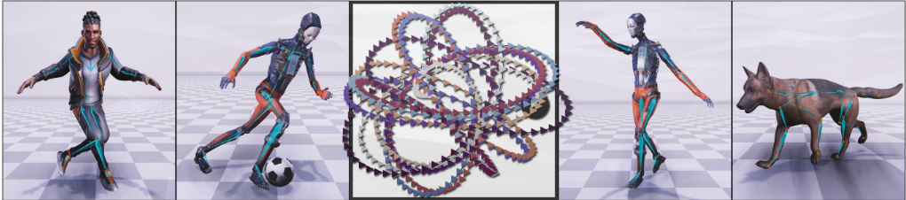
Learning the spatial-temporal structure of body movements is a fundamental problem for character motion synthesis. In this work, we propose a novel neural network architecture called the Periodic Autoencoder that can learn periodic features from large unstructured motion datasets in an unsupervised manner. The character movements are decomposed into multiple latent channels that capture the non-linear periodicity of different body segments while progressing forward in time. Our method extracts a multi-dimensional phase space from full-body motion data, which effectively clusters animations and produces a manifold in which computed feature distances provide a better similarity measure than in the original motion space to achieve better temporal and spatial alignment. We demonstrate that the learned periodic embedding can significantly help to improve neural motion synthesis in a number of tasks, including diverse locomotion skills, style-based movements, dance motion synthesis from music, synthesis of dribbling motions in football, and motion query for matching poses within large animation databases.
CCS Concepts: · Computing methodologies → Motion capture; Neural networks.
Additional Key Words and Phrases: neural networks, human motion, character animation, character control, character interactions, deep learning
ACM Reference Format:
Sebastian Starke, Ian Mason, and Taku Komura. 2022. DeepPhase: Periodic Autoencoders for Learning Motion Phase Manifolds. ACM Trans. Graph. 41, 4, Article 1 (July 2022), 13 pages. https://doi.org/10.1145/3528223.xxxxxxx
Authors' addresses: Sebastian Starke, Electronic Arts, sstarke@ea.com, The University of Edinburgh, sebastian.starke@ed.ac.uk; Ian Mason, The University of Edinburgh, s1639786@sms.ed.ac.uk; Taku Komura, taku@cs.hku.hk, The University of Hong Kong.
Permission to make digital or hard copies of part or all of this work for personal or classroom use is granted without fee provided that copies are not made or distributed for profit or commercial advantage and that copies bear this notice and the full citation on the first page. Copyrights for third-party components of this work must be honored. For all other uses, contact the owner/author(s).
© 2020 Copyright held by the owner/author(s).
0730-0301/2022/7-ART1
https://doi.org/10.1145/3528223.xxxxxxx
1 INTRODUCTION
Learning the spatial-temporal structure of the motion space allows for the interpolation of motion data and the production of realistic transitions within and between different types of motions. A significant amount of work has been introduced in the area of computer animation and machine learning for modeling the motion space for various tasks in motion prediction, synthesis and control. The motion space is a field where each sample in the space is collected from motion capture data. Methods to learn continuous spaces have been proposed, though they often suffer from smoothed-out motions and poor responsiveness.
The difficulty of learning the structure of the motion space lies in the sparsity of the data and the highly nonlinear structure of the space. Indeed, motion capture data are fundamentally sparse. Although parts of the data, where the subject is conducting a single type of locomotion such as walking or running, are dense, transitions between different types of motions are very limited. This makes modelling the interpolations or transitions between different motion types difficult. When updating the state of the character, by interpolating the samples in the neighborhood, the system tends to sample states forwards and backwards in time causing the character to stagnate. Alternatively, transitioning to states that are far away can cause the updates to diverge to spaces where there are no samples. This means that data-driven models that generate motions for character control tasks may produce over-smoothed or erratic movements as the similarity in the motion space does not generally represent their similarity in time.
To cope with this issue, we focus on the local periodicity of character motion both in time and in space. This is one of the key characteristics required for producing a smooth and continuous motion space. As a result, it is beneficial to consider such periodicity for modelling the motion space for motion synthesis, prediction and analysis. More specifically, cyclic motions such as walking or running are periodic, but motions such as grasping, punching, sitting and jumping or transitions between walking and running can also
be considered (temporally) locally periodic, assuming that they are temporal slices of periodic motions or transitions between periodic motions. Beyond that, full-body movements can happen as a composition of multiple (spatially) local periodic movements. For human/quadruped motion, it is often the case that the motion is not driven by a single phase signal but by a combination of multiple local phase signals, such as when waving the hand or manipulating objects while walking, wagging the tail while running, or dancing a complex choreography where arms, legs or even hips and head may be moving at different timing and frequency. Such local periodicity allows us to build a general motion manifold structure whose parameters are composed of phase, frequency, offset and amplitude.
In this work, we propose a novel neural network architecture called the Periodic Autoencoder that can learn periodic features from large unstructured motion datasets in an unsupervised manner. Neurologists and neuroscientists believe that the interaction between the musculoskeletal system, environmental stimuli and central pattern generator neural circuitry (that produces periodic pulse signals) together generate signals for locally periodic locomotion [Dimitrijevic et al. 1998; Yuste et al. 2005]. Inspired by this, the character movements are decomposed into multiple latent channels that capture the non-linear periodicity of different body segments during synchronous, asynchronous and transition movements while progressing forward in time. Our method extracts a multi-dimensional phase space from full-body motion data, which effectively clusters animations and produces a manifold in which computed feature distances provide a better similarity measure than in the original motion space which helps achieve better temporal and spatial alignment. This feature space is more compact than the original motion data and a future pose can be sampled from the past pose by timefrequency increments. During training, each latent phase channel becomes tuned for different local movements and essentially acts as a band-pass filter for different ranges of learned frequency and amplitude values.
We demonstrate that the learned periodic embedding can significantly enhance data-driven character animation for a number of tasks, including diverse locomotion skills, stylized movements, dance motion synthesis from music, synthesis of dribbling motion in football (see Fig. 1). We show benefits of using our learned phase manifold when generating such motions with neural character controllers, as well as when applied to motion query tasks for matching poses within large animation databases in order to scale with the growing amounts of motion data available.
The key contributions of this paper can be summarized as follows:
· A novel neural network architecture, called the Periodic Autoencoder, that transforms unstructured character movements into a periodic manifold that effectively represents the alignment of full-body motion in space and time.
· A demonstration of applying the learned feature space for various tasks in character animation, including real-time synthesis of biped/quadruped locomotion, stylistic movements, dance motion frommusic, football dribbling, as well as effective motion query in motion matching.
· An evaluation of the learned phase space in comparison with existing state-of-the-art animation systems.
2 RELATEDWORK
We first review classic works on learning from motion capture data for animation purposes. We then review works that use neural networks and large motion capture datasets to learn how to model motion and relate these approaches with the one herein. Finally we review works that focus on learning motions in the frequency domain.
Learning from Motion Capture Data. Classic methods to learn from motion capture data align the motions along the timeline and interpolate them with linear interpolation [Wiley and Hahn 1997], radial basis functions [Rose et al. 1998; Rose III et al. 2001] and Gaussian processes [Mukai and Kuriyama 2005]. As interpolating all motions could be computationally expensive, samples found by nearest neighbor search [Kovar and Gleicher 2004] are often used. When interpolating motions, aligning the movements along the timeline is needed to produce a motion that follows the constraints given by the user.
Another type of motion that may be learned from motion capture data is the transition from one class of motion to another, such as from idle to walk/run, walk to sit, etc. For this purpose, similarities between poses are computed by comparing the state vectors either based on joint angles/angular velocities or joint positions/velocities. Motion graph approaches [Arikan and Forsyth 2002; Kovar et al. 2008; Lee et al. 2002] construct a graph structure of movements based on such distance metrics. In these methods, the synthesized motions are only a series of play-backs of the original motion capture data and no novel motions are synthesized. For achieving both good interpolation and good transitions, methods to enhance motion graph methods by interpolating motions of the same class/transition have been proposed [Heck and Gleicher 2007; Min and Chai 2012; Safonova and Hodgins 2007; Shin and Oh 2006]. These approaches require a significant amount of data preprocessing, where the motions of the same type need to be aligned along the timeline, and in most cases they require manual adjustments.
The discrete nature of graphs introduces disadvantages such as slow responses to quick changes in user instructions or unexpected disturbances, or difficulty starting from arbitrary states. Continuous representations have been introduced to cope with such issues. Motion fields [Lee et al. 2010] searches for nearest neighbors after sampling a pose in the high-dimensional vector field of human motion and interpolates them to update the state. Reinforcement learning is applied for constructing a controller that outputs the action that follows the user control signal. Levine et al. [2012] construct a latent space from the motion data, which reduces the dimensionality for reinforcement learning. Cho et al. [2021] apply VQ-VAE [Oord et al. 2017] to cluster the actions and states to reduce the cost of reinforcement learning. Motion matching [Clavet 2016] follows the idea of motion fields [Lee et al. 2010] but simply picks the nearest neighbor clip that matches the current state and follows the user instruction. This allows for more flexible transitions and improves the responsiveness of the character. Lee et al. [2021b] train a student policy using a dataset produced by motion matching to generate a time-critical policy. The low dimensional features computed by our method can be applied for motion matching and also potentially for reinforcement learning.

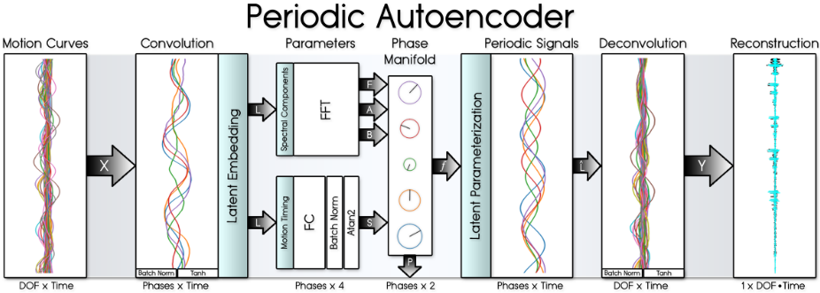
Motion Synthesis by Neural Networks. A recent branch of machine learning methods for motion synthesis are those that make use of neural networks. Compared to classic machine learning techniques these methods are better able to scale with increasing data quantities. Techniques based on temporal convolution [Holden et al. 2016, 2015], recurrent models [Harvey et al. 2020; Lee et al. 2018], feedforward networks [Holden et al. 2017; Starke et al. 2019, 2020], generative models [Henter et al. 2020; Li et al. 2021; Ling et al. 2020; Valle-Pérez et al. 2021] and deep reinforcement learning [Cho et al. 2021; Lee et al. 2021a; Peng et al. 2018, 2016, 2017] have all been developed. However, in general the difficulty of neural motion synthesis remains in the ambiguity of the future and the alignment of the motion along the timeline. Without overcoming these problems, the synthesized motion tends to appear smoothed out and blurry. For reducing the ambiguity in future, methods to provide descriptive control signals [Harvey et al. 2020; Holden et al. 2016; Lee et al. 2018] or generative models have been effective [Henter et al. 2020; Li et al. 2021; Valle-Pérez et al. 2021]. Our paper focuses on the problem of alignment of the motion along the timeline.
One of the streams of methods designed to improve the alignment of movements along the timeline involves providing phase variables that describe the progression of the motion. Phase-functioned Neural Networks (PFNN) [Holden et al. 2017] condition the network weights on a phase variable defined based on foot-ground contacts in bipedal locomotion. This factorization aligns every frame of the motion in the dataset and allows smooth transitioning between arbitrary frames in different types of locomotion. Starke et al. [2019] extend this concept to other classes of motions such as carrying objects, sitting on chairs and opening a door. As providing a global phase label for complex motions that involve multiple contacts, such as dribbling a ball, is difficult, Starke et al. [2020] propose to provide the local phase for each limb. On the other hand, such an approach is only applicable for movements that involve contacts, many motions such as dancing or walking in different styles do not contain contacts for the hands, and how to define phases for such movements has been an issue. Another challenge with phases based on contacts is that they require careful tuning of thresholds for computing the phase labels. Mason et al [2022] use a PCA heuristic to compute the local phase of cyclic arm movements during locomotion, although a different heuristic would be needed for arbitrary movements. Instead, in this research, we propose an architecture to learn multi-dimensional phase variables from arbitrary unstructured motion capture data.
Another topic that is actively being researched is physically-based motion tracking [Bergamin et al. 2019; Fussell et al. 2021; Lee et al. 2021a; Luo et al. 2020; Merel et al. 2020; Park et al. 2019; Peng et al. 2018, 2016, 2017; Won et al. 2020]. These methods provide solutions for tracking kinematic motion capture data by computing the torques that produce motions similar to the kinematic reference motion. A small set of kinematic motions can produce a wide variation of movements due to physics constraints, such as when maintaining balance whilst being perturbed by external forces. It is known that phase inputs are also effective for such a setup [Peng et al. 2018]. GAN models to synthesize motions in the physical domain are also proposed [Ho and Ermon 2016; Peng et al. 2021], though they may suffer from domain collapse, which inhibits them from being applied for a wide range of movements. Our objective is to cover a wide range of the motion space using the motion model itself rather than relying on physics. The techniques developed in this research can also be applied for synthesizing reference motions for physics-based tracking.
Motion Synthesis in the Frequency Domain. Finally, we review methods that represent motions in the frequency domain, as we also predict spectral parameters of the motion. Frequency domain approaches have been proposed for motion synthesis [Liu et al. 1994], editing [Bruderlin and Williams 1995], stylization [Unuma et al. 1995; Yumer and Mitra 2016] and compression [Beaudoin et al. 2007]. These methods mostly apply edits to each degree of freedom, and do not compute features that represent the correlation of different parts of the body. Our idea in this research is to construct a latent space using an encoder and then applying a frequency domain conversion as an inductive bias. By applying our approach, we can extract periodic latent parameters that represent the fullbody motion.
3 PERIODIC AUTOENCODER
In this section, we describe the structure of the Periodic Autoencoder that computes periodic latent vectors from the original motion data, which form the phase manifold. We first describe the structure of the network, then the phase manifold formed by the network and finally the training process of the network.
3.1 Network Structure
To transform the motion space into a learned phase manifold, we utilize a temporal convolutional autoencoder architecture structure similar to Holden et al. [2015]. However, as well as training the model to reconstruct input, we additionally enforce each channel of the latent space to be in the form of a periodic function, which allows us to learn a phase variable for each latent channel from a small set of parameters. Our network architecture is shown in Fig. 2. The temporal data is divided into overlapping windows of length 𝑁 with corresponding centered time window T . 1
Given the input motion curves, X ∈ R𝐷×𝑁 where 𝐷 is the degrees of freedom of the body and 𝑁 is the number of frames of X, we train an encoder, 𝑔, that uses 1𝐷 convolutions to learn a lowerdimensional embedding of the motion,

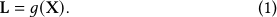
L ∈ R𝑀×𝑁 , where 𝑀 is the number of latent channels, that is, the number of desired phase channels to be extracted from the motion.
We enforce periodicity by parameterizing each latent curve in L as a sinusoidal function, defined by amplitude (A), frequency (F), offset (B) and phase shift (S) parameters. To compute A, F, B ∈ R𝑀 we use a differentiable real Fast Fourier Transform (FFT) layer. We apply the FFT to each channel of L and create the zero-indexed matrix of Fourier coefficients c ∈ C𝑀×𝐾+1 , 𝐾 = ⌊ 𝑁2 ⌋, and then apply element-wise operations to compute the per channel power spectrum p ∈ R𝑀×𝐾+1 :

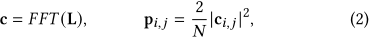
where 𝑖 is the channel index and 𝑗 is the index for the frequency bands. The corresponding parameters are then given by

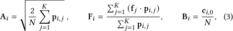
where f = (0, 1/𝑇, 2/𝑇, . . . , 𝐾/𝑇) is a vector of frequencies. These operations provide the shape parameters to construct the 𝑀 periodic functions within the time window, but do not yet include the timing, that is, the phase shifts of the functions. To obtain this timing parameter, we learn a separate fully-connected (FC) layer for each latent curve that predicts only the signed phase shift S ∈ R𝑀 at the central frame of T via an intermediate two-dimensional vector:

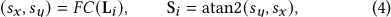
where 𝑖 is the channel index.
From learned parameters F, A, B and S, along with the known time window T , it is possible to reconstruct a parameterized latent

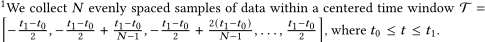
space ˆL in form of multiple periodic functions that has the same shape dimensionality as the original latent embedding using the parameterization function 𝑓 :

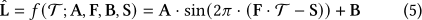
Finally, the network decodes the parameterized latent space using 1𝐷 deconvolutions in decoder, ℎ, to map back to the original input motion curves:

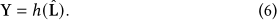
The network is trained using the reconstruction loss between the original and predicted motion curves:

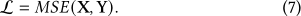
This induces the network to learn the time alignment of poses across different motion clips and assigns a changing phase to each new frame of motion in a one-directional manner. To see why, consider a window of motion centred at frame 𝑡 , extracted from some longer motion clip and encoded to create ˆL. The parameters A, F and B constrain the shape of the periodic signals and the network has to learn to position the curves correctly using S. For a window of motion centred at frame 𝑡 + 1, extracted from the same motion clip, we expect that any changes in A, F and B will be very small (see Fig. 3), so 𝑆 needs to progress to keep the latent space aligned with the motion since the same convolutional decoder is used. That is, the model effectively has to learn to predict 2D vectors rotating in a clockwise direction to change the values of the periodic embedding fromwhich it needs to reconstruct the input curves.
Another possibility to construct the phase manifold is to learn the periodic parameters directly by the network instead of using an FFT layer: we experimented this but not only the phase parameters but also the amplitude and frequency oscillate a lot along time, resulting in a very noisy phase manifold. Learning the conversion of signals into the frequency domain seems not easy, and using the FFT layer significantly stabilizes the learning process.

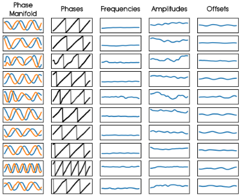

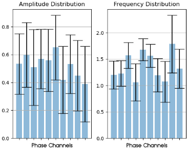
3.2 Phase Manifold
We now describe how the phase manifold is formed using the periodic latent variables computed with the Periodic Autoencoder.
After network training, the periodic parameters for an unstructured motion dataset can be computed per frame by shifting the Periodic Autoencoder along the motion curves. The periodic parameters represent the local periodicity of the latent variables: using them we form a phase manifold P of dimensionality R 2𝑀 , where a sample at frame 𝑡 is computed by

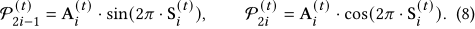
The features in P well describe the timing of the frame within the input motion X and greatly help to align motions within the same class or across different classes of motions. This means they can effectively function as an input feature for neural motion synthesis or motion matching, we will present such usage and results in Section 4 and Section 5. The phase variables of ten channels within a short time window for an example motion clip are plotted in Fig. 3. It can be observed that each channel learns features for different frequencies, which correspond to different speeds of movements. We plot the distribution of amplitudes and frequencies of each channel in Fig. 4. We can observe that each phase channel learns to extract different ranges of amplitude and frequency values across the movements. The system can encode various details or patterns of motion, which is useful for temporal alignment.
Given a motion sequence, the periodic feature smoothly shifts over the phase manifold. Since the amplitude and frequency of each phase channel can alter over time, the Periodic Autoencoder can encode non-periodic motions as well as periodic motions, such as transitions from one type of motion to another. Such non-periodic transitions or motion behaviors may be observed in form of amplitudes increasing or decreasing for different channels (i.e. a human walking and starting to wave hands), or asynchronous changes in phase shift or frequency (i.e. transitioning between pace and trot for quadrupeds). Fig. 5 demonstrates such examples where the phases can exhibit cyclic or acyclic patterns throughout an entire motion clip.

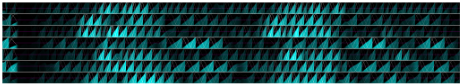
The reason to define the phase manifold as in Eq. (8) instead of separately using all parameters such as the frequency, amplitude and phase is that we wish the phase features to cluster the animations in both space and time. Features such as frequency and amplitude remain near-constant over time, and does not help well for alignment purpose. Transforming them into a hyperspherical space using Eq. (8) achieves such a space-time alignment where A and S define the point in that space and F can be represented by a window of such points. This transformation also constructs a continuous interpolation space: While 1D phase values are discontinuous and may become undefined if no motion is performed, encoding them as 2D vectors enables transitioning to the origin of the manifold at zero amplitude.
3.3 Network Training
To train the Periodic Autoencoder, we use the 3D joint velocity trajectories as input to the network, each of them transformed into the root space of the character [Holden et al. 2017]. We subtract a window-based mean to center the motion curves, but do not apply any standard deviation scaling in order to maintain the relative differences. The input data covers 60 frames (1 second) each in the past and future around the center frame at 60 Hz framerate. This constructs an input vector 𝑋 ∈ R 3· 𝐽 ×𝑁 where J is the number of character joints and 𝑁 (= 121) is the number of time samples.
For the encoder, 𝑔, we use two convolutional layers, producing a mapping (3 · 𝐽 × 𝑁) → (𝐽 × 𝑁) → (𝑀 × 𝑁), to compute the motion curve embedding. Each convolution is followed by a batch normalization and tanh activation function. Since we directly perform operations on the latent space to extract periodic parameters, we observed that batch normalization significantly helps stabilizing the training for this task and helps prevent the latent space distribution from decaying or the model from overfitting when trained for too long. We further apply a batch normalization to the predicted phase shift vector before calculating its signed angle. The decoder, ℎ, again involves two convolutional layers to compute a mapping (𝑀 ×𝑁 ) → ( 𝐽 ×𝑁 ) → (3 · 𝐽 ×𝑁 ), but with batch normalization and tanh activation applied only after the first deconvolution and not to the output layer. We train our network using the AdamW optimizer [Loshchilov and Hutter 2019] for 30 epochs, using a learning rate and weight decay both of 10 -4 and a batch size of 32. Training with a NVIDIA RTX 3080 GPU typically takes less than an hour for smaller datasets (∼ 1 hour motion data and ∼ 24 character joints), but may take longer if the dataset or number of joints becomes larger. For the number of phase channels, we observed that 5-10 is typically sufficient depending on the variety of motions in the data. While for regular biped locomotion five or less phases can be enough, more phase variables are useful to accurately model more complex movements such as dancing, quadrupeds, or movements in a large range of different styles. In our experiments, they are set to 5 (biped, quadruped locomotion), 10 (styles), 8 (dance) and 6 (football).

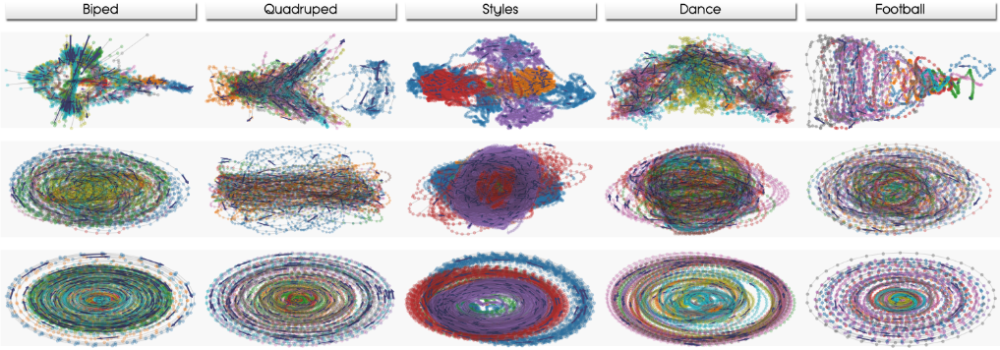
4 MOTION CONTROLLERS
We demonstrate the effectiveness of the learned phase variables for two different character control frameworks: neural networks and motion matching.
4.1 Neural Motion Controller
For the neural network-based controller, we develop a time series model that predicts the pose in the current frame given the previous frame and current user controls. The model is trained in a supervised manner using the motion capture data. We use a Weight-Blended Mixture-of-Experts framework similar to [Starke et al. 2020; Zhang et al. 2018], but instead of using the velocities or contact-based local phases as input to the gating network, we use the phase vectors on the phase manifold (i.e., Eq. (8)) as input features to generate movements in an autoregressive manner. Giving the phase feature as an input helps the system align the motion data along the timeline and allows the character to realistically transition between movements as we present in Section 5.
The system autoregressively updates the phase state of the character as well as its motion. The system first predicts the next phase vectors P𝑡+Δ𝑡 , the amplitudes 𝐴𝑡+Δ𝑡 and frequencies 𝐹𝑡+Δ𝑡 . Instead of directly using the predicted phase vectors, it is updated as follows:

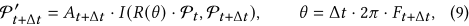
ACM Trans. Graph., Vol. 41, No. 4, Article 1. Publication date: July 2022.
where Δ𝑡 is the frame delta time, 𝑅 is a 2D rotation matrix, and 𝐼 is a spherical linear interpolation with weight 0.5 to enable blending phase angle and magnitude separately. Updating the phase in such a manner enforces the frequency to progress the phase in the direction directly predicted by the neural network. The frequency is a uniform positive value that is simple to predict and keeps the network traversing through the phase space in a one-directional manner (see Fig. 6). This scheme prevents the motion from appearing stiff or getting stuck in time, which is a common problem observed for data-driven character controllers.
The expert gating network learns to blending 8 sets of expert weights and consists of two hidden layers of size 128. The motion generation network uses two hidden layers of size 512. Dropout is set to 0.3, batch size is 32, and both learning rate and weight decay are initialized as 10 -4 . We use the AdamWR optimizer [Loshchilov and Hutter 2019] with cosine annealing warm-restart scheduling, and set its restart iterations to 10, restart factor to 2.0, and train the model for 150 epochs. Training each model requires between 12 and 48 hours. The network is implemented in PyTorch and generates an ONNX file that can be run in Unity for inference using its Barracuda library.
4.2 Motion Matching
In the context of motion matching, the phases can be used in a similar manner as for neural networks and do not require changes in the workflows typical for motion matching. The key difference is that instead of matching higher-dimensional pose or velocity features of the current character state, the systemmatches lower-dimensional phase vectors to search for the pose at the next frame given the user control signals, such as the root trajectory. We visualize the phase features and the velocity features for different motions in Fig. 6 (see Section 5.1 for further details). The Euclidean distance between neighbouring points in phase space that are adjacent to each other is uniform (bottom row), which means that poses matched by motion matching will have similar differences in time. This enables synthesizing more smooth and realistic movement transitions with less parameter tuning, which is not easily the case when matching Cartesian pose features (top row) that need to be handpicked for specific joints (i.e. feet for locomotion) or require additional filtering.
5 EXPERIMENTS AND EVALUATION
In this section, we show our experimental results where we compute phase manifolds using the Periodic Autoencoder and generate motion using various motion capture datasets (see Table 1). We first visualize the learned phase manifold and compare with those learned using existing methods. We next present the results of realtime motion synthesis with our neural network framework. Finally, we provide a quantitative evaluation of our results and a system evaluation using motion matching as the test-bed.
5.1 Learned Phase Manifolds
After computing the phase manifold for each dataset as described in Section 3, we compute the Principle Components (PCs) of the phase features to project them onto a 2D plane (see Fig. 6 bottom). For comparison, we compute an embedding by replacing the phase layers with fully connected layers, and similarly project them to a 2D plane after computing their PCs (see Fig. 6 middle). Finally, we also plot the PCs of the original joint velocities (see Fig. 6 top). In these figures, all samples of the same motion clip are assigned the same color, which means that neighbouring frames in the motion data should be closely connected in the embedding. It can be observed that the phase manifold has a consistent structure similar to polar coordinates. The cycles represent the primary period of the individual motions, where the timing is represented by the angle around the center, and the amplitude as the velocity of the motion. Furthermore, samples smoothly transition between cycles of different amplitude or frequency, which indicate transition points between movements.
We highlight shorter sequences of the 2D projections of biped locomotion and dance motion in Fig. 7. This further clarifies the segmentation of similar motion states. The embeddings by the fully connected layers produce cycles that appear less structured while those by our approach produce cycles adjacent to one another. The cycles by the original velocities produce distributions where the samples are distributed at random locations in the 2D plane. This suggests that character movements and transitions can be better represented in phase space than in the original motion space or by fully-connected embeddings, for which even simple movements like regular human locomotion may exhibit difficult paths in the feature space.

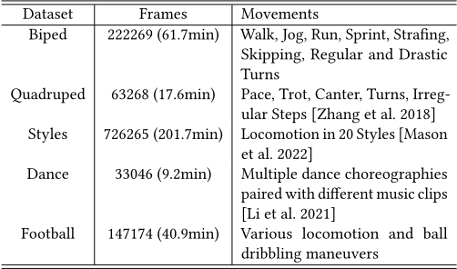
Recognized table text (check against the image)
| Dataset | Frames | Movements |
|---|---|---|
| Biped | 222269 (61.7min) | Walk, Jog, Run, Sprint, Strafing, Skipping, Regular and Drastic Turns |
| Quadruped | 63268 (17.6min) | Pace, Trot, Canter, Turns, Irreg- ular Steps [Zhang et al. 2018] |
| Styles | 726265 (201.7min) | Locomotion in 20 Styles [Mason et al. 2022] |
| Dance | 33046 (9.2min) | Multiple dance choreographies paired with different music clips [Li et al. 2021] |
| Football | 147174 (40.9min) | Various locomotion and ball dribbling maneuvers |

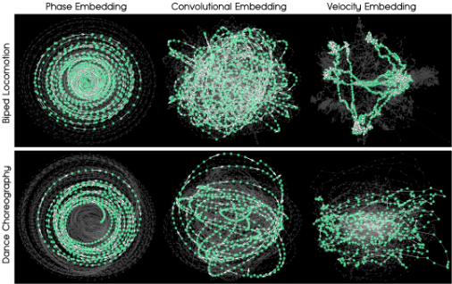
Finally, the results of visualizing the PCs of biped walking, stylized multi-periodic walking and dancing motion in 3D are shown in Fig. 8. While there is only one monotonic cycle for the biped walking, multiperiodic cycles are visible for the stylized walk: the arms are moving faster in this walking style whose period is captured in the vertical waves. The dancing motion is composed of multiple subcycles with different frequencies. This results in cycles of various orientations overlapped with one another.
5.2 Motion Synthesis by Neural Netowrks
We present the animated results created using the neural networks framework described in Section 4. The readers are referred to the supplementary video for the details. Here we mainly compare our results with those of PFNN [Holden et al. 2017], MANN [Zhang et al. 2018] and LMP [Starke et al. 2020].
Locomotion. Our system is able to produce a range of biped locomotion movements (see Fig. 9, top). Compared to PFNN or LMP, the difference is most obvious when viewing the very sharp turns and agile motions. The proposed framework enables more momentum and gravity to be seen in the upper body as the extracted phase features contain information that align the upper body motion as well as the lower body. In particular, the phases for PFNN and LMP are computed based on the foot contacts, which may cause the upper body motion to be blurred especially for drastic movements when such variations are included in the data. Our system can also produce smooth transitions from low-to-high frequency movements with better quality (see Fig. 10, right) since the feature transitions in the phase manifold are better structured (corresponds to transitions from outer-to-inner cycles in Fig. 7).

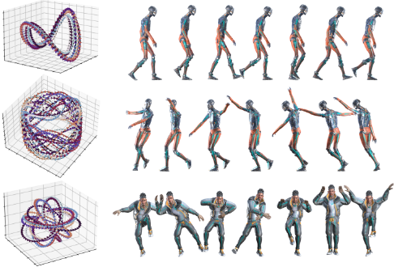
Our system also works very well for synthesizing quadruped locomotion modes in high quality (see Fig. 9, bottom). Compared to MANN or LMP, the tail movements during the motion are more active as those models do not consider the periodicity of the tail (see Fig. 10, left). Especially during standing when no control input is given, the entire body of the character tends to become stiff (also see Section 5.3, Table 2) while the learned phase manifold keeps the tail and body motion progressing. We observe that at least one phase variable learns to be primarily responsible for the tail motion with different periodicity from the phases of the rest of the body.
Stylistic Movements. We train our model with 20 stylized motions using the motion data from Mason et al. [2022]. The movements cover a diverse range of different stylized locomotion behaviors, particularly those where the arms are moving with a different periodicity from the legs (see Fig. 11). Compared to LMP, the arm movements are considerably sharper and body gravity is preserved better as LMP computes the local phase only based on contacts. Without the ability to align the variety of movements for which contacts are rather sparse, the upper-body limbs tend to become stiff (see Fig. 12, bottom). Our results perform similarly to Mason et al. [2022], however, their method of computing local phases for each limb or motion type is designed for their specific motion dataset. Note that they compute the leg phases using the foot contacts with the ground and PCA heuristic functions for the arms or during contact-free feet motion such as hopping. This requires additional labelling, whereas our method computes the phase purely using the motion.

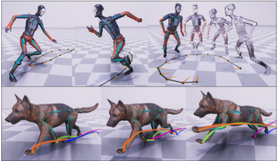

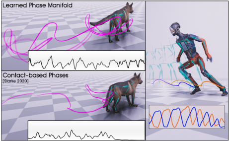
Dance Motion Synthesis. To let the character dance in response to different music clips, we train neural network models where the tonal and rhythmic music features (mel spectogram, mel frequency cepstral coefficients, spectral flux, chroma, beats, zero-crossings), similar to the setup in Valle-Pérez et al. [2021], are given as control signals from which the character motion and trajectory are predicted in an autoregressive manner. Our model produces vivid motions for both the arms and the legs, in sync with the music (see Fig. 13). The trained system generalizes to test music clips that are different from the training music data: in this case, the style of dance whose music features are closest to the test set appears to be selected and adapted to the music and its beat. We also observed that when switching randomly between music clips during the dance, the model selects the right timing for the transition and generates appropriate body movements that are outside the data. In contrast, the baselines fail to accurately reconstruct the diverse choreographies in the dataset and may lose the time alignment with the music, causing the motion to become stiff. (see Fig. 12, top). When visually comparing our results with those by MoGlow [Henter et al. 2020], Transflower [VallePérez et al. 2021] and AI Choreographer [Li et al. 2021], our system produces more smooth and stable movements (see supplementary video). Although the motion by Transflower appear creative thanks to the random sampling in the latent space, the movements are noisy and suffer from jerkiness, and the feet often slide over the ground during the support phase.

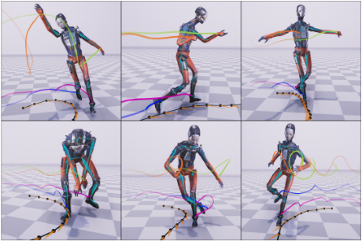

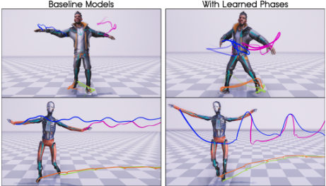

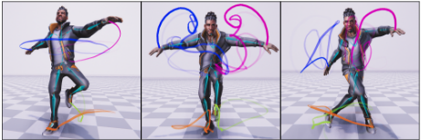
Football Dribbling. We finally test our model with football dribbling where the ball behaves in a varying manner with respect to the feet. The footballer also conducts various footstep movements of different frequency, particularly during sharp turns while turning with the ball. During runtime, the ball is controlled using physics after separating from the feet, and thus the motion is unseen during training. When the ball is within a small proximity range around the character root or feet, the physics-based ball velocity is interpolated with the ball velocity prediction by the network. Despite such tough conditions where the character has to move aligned with an external object during fast-paced movements, the system predicts the character motion accordingly to continue dribbling the ball in a plausible manner (see Fig. 14). As with the previous results, the system is provided with no contact information and still produces realistic interactions between body and object.

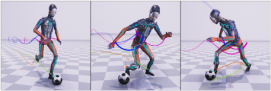
5.3 Evaluation
In this section, we first further evaluate the results that make use of the neural networks. We also evaluate the phase variables as features by applying them for motion matching.
Evaluation of Motions by Neural Networks. Here we evaluate the vividness of the motions and foot skating artifacts. For evaluating the vividness, we compute the average joint rotations per second (see Table 2). It is often the case that motions generated by neural networks are blurry due to blending motions dissimilar motions at wrong timings. Such artifacts can be reduced by using the phase variables as features; it can be observed that the proposed approach can synthesize motions with more movements per second compared to the baselines.
We next evaluate the foot skating artifacts (see Table 3). First, the maximum foot velocity during foot contact states is computed for each set of motion (𝑣𝑚𝑎𝑥 ), and then the foot speed at each contact state (𝑣) during inference is computed and divided by 𝑣𝑚𝑎𝑥 . Finally, we evaluate the average 𝑣 𝑣𝑚𝑎𝑥 across all collected samples. The baselines use foot contact labels for training but can still blend movements with different poses, which produce foot skating artifacts during runtime. As our method aligns the motions, both in terms of space and time, the amount of foot skating is reduced for most datasets even when we are not providing the foot contact labels as inputs.
Evaluation of the Phase Feature Metric. We now examine the metric based on the phase features by applying it as a distance function for motion matching. Motion matching matches the current pose with the poses in the database to select the next motion clip using a distance function. A KD tree structure of the motion data is precomputed based on the state vector and the distance function. During runtime, the 𝑘-nearest neighbours that match the current pose and the control signals are selected, and further filtered to select the best next clip. A simple approach is to use a distance function based on all the joint positions and velocities; this is memory intensive and slow as the state vector is high dimensional. Therefore, developers usually define a state vector using a subset of joints. For example, for locomotion, distance as a combination of foot and spine positions/velocities is used, while for motions such as dancing, a distance that also considers the hand positions/velocities is needed [Mach and Zhuravlov 2021].

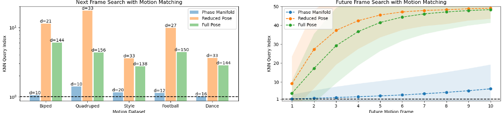
We compare the effect of using a state vector/distance function based on the phase features with distance functions based on a subset of joint positions/velocities and the full set. We first examine how the next pose in the motion capture data will be indexed when given the feature of the current pose data as the input (see Fig. 15, left), which ideally should be at first index. Despite the low dimensionality of the phase feature, the next pose is always indexed close to the current pose, while also effectively shrinking the required memory cost for the feature database. The full state and reduced state vectors cannot always index the next pose close to the current pose - which also explains the need for further filtering of the motions to find the next appropriate clip.

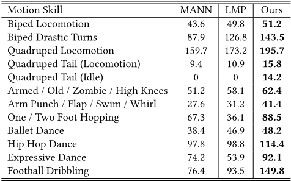
Recognized table text (check against the image)
| Motion Skill | MANN | LMP | Ours |
|---|---|---|---|
| Biped Locomotion | 43.6 | 49.8 | 51.2 |
| Biped Drastic Turns | 87.9 | 126.8 | 143.5 |
| Quadruped Locomotion | 159.7 | 173.2 | 195.7 |
| Quadruped Tail (Locomotion) | 9.4 | 10.9 | 15.8 |
| Quadruped Tail (Idle) | 0 | 0 | 14.2 |
| Armed / Old / Zombie / High Knees | 51.2 | 58.1 | 62.4 |
| Arm Punch / Flap / Swim / Whirl | 27.6 | 31.2 | 41.4 |
| One / Two Foot Hopping | 67.3 | 36.1 | 88.5 |
| Ballet Dance | 38.4 | 46.9 | 48.2 |
| Hip Hop Dance | 97.8 | 98.8 | 114.4 |
| Expressive Dance | 74.2 | 53.9 | 92.1 |
| Football Dribbling | 76.4 | 93.5 | 149.8 |

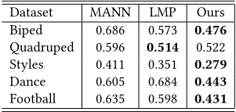
Recognized table text (check against the image)
| Dataset | MANN | LMP | Ours |
|---|---|---|---|
| Biped | 0.686 | 0.573 | 0.476 |
| Quadruped | 0.596 | 0.514 | 0.522 |
| Styles | 0.411 | 0.351 | 0.279 |
| Dance | 0.605 | 0.684 | 0.443 |
| Football | 0.635 | 0.598 | 0.431 |
Next we examine how such an indexing extends to future frames. We compute the indices of the actual future frames in the motion capture data from the current state of the body. In this case, for the phase feature, we first estimate the future phase state by extrapolating the current phase state using the frequency at the current state and the delta time from the current to the future frame similar to Eq. (9), but without changing its amplitude. For the reduced and full raw state vectors, we use the position and velocity vectors of the current frame for the query, but without extrapolating the velocity to the future as this will produce worse results especially for more distant future frames. Thus, the ability to extrapolate a current frame into future can be considered a unique property of our phase manifold compared to the original motion space. This functionality to accurately predict the future state supports the robustness of our method and can further be useful for planning the motion when interacting with other characters, planning transitions or computing IK offsets for guiding limb movements.
Finally, we visualize the 𝑘-nearest neighbour poses computed by the phase features based on contact labels [Starke et al. 2020], heuristic local phase [Mason et al. 2022] and our method (see Fig. 16 and the supplementary video). As the other methods only compute the phase features based on the foot contact labels and the principal components of the hand velocities, the similarity of the pose itself is not considered when searching the nearest neighbours. As can be observed in Fig. 16 and Table 4, our approach can find poses in the dataset where the leg configurations are more similar to the query pose. In fact, our method does not use the pose information either, but rather the long window of velocity information compressed by our method is able to better match the pose. The larger variation for other methods can cause more foot skating not only in motion matching but also for neural networks, as the system will tend to blend poses with similar state vectors (see Table 3). Note that the nearest neighbors of the phase features are also more similar in terms of of timing (see the supplementary video). Although raw joint position/velocity with dynamic time warping [Kovar and Gleicher 2004] can align motions well, the dimensionality of the vectors are much higher and costly to compute. Thus this is not suitable for real-time motion matching or to be within the training loop of a neural network-based system.

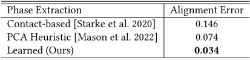
Recognized table text (check against the image)
| Phase Extraction | Alignment Error |
|---|---|
| Contact-based [Starke et al. 2020] | 0.146 |
| PCA Heuristic [Mason et al. 2022] | 0.074 |
| Learned (Ours) | 0.034 |

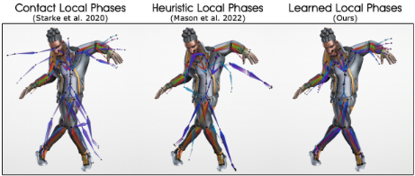
6 DISCUSSION
The learned phase feature introduced in this paper inherits various characteristics of the phase structure introduced by Holden et al. [2017] and further enhanced by Starke et al. [2020], which includes unidirectionality and motion alignment. The unidirectionality is introduced through the incremental nature of the phase. This characteristic reduces the chance the system matches previous frames as neighbours of the current frame, which helps avoiding artifacts where the motions may appear stiff (see Fig. 17). Indeed, when visualizing the L2 distance between each frame in various motions, the similarity of the poses are apparent only in the direction where time is increasing when using the phase feature, where this is not the case for position/velocity feature (see Fig. 18). Also, the proposed method allows the alignment of not only locomotion or contact-intense interactions, but also complex full body motions where the limbs move in an asynchronous manner or in irregular patterns. This is an improvement over local motion phase [Starke et al. 2020] which requires contacts for defining the phase, or Mason et al. [2022] that defines the local phase based on the individual movements (see Fig. 16).

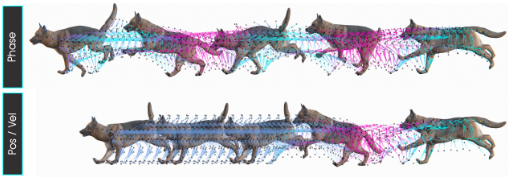

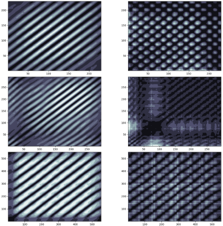
The number of phase channels of the Periodic Autoencoder is a hyperparameter whose optimal number can depend on the amount of data used for training and the variation of motion types included in the dataset. While a low number of channels will potentially blend motions with different local timings incorrectly, increasing the number of channels could potentially cause problems on the application side. Although it is unlikely to be an issue for motion matching, having a large number of inputs in the gating network for motion synthesis will decrease the number of samples to be interpolated for each cluster segmented by the gating network; this can result in fewer transitions between motions. Furthermore, although there is no direct control about which phase becomes specialized for which specific body region or motion type, the system is learning the representative coordination of different parts of the body in different phase channels. When different body parts are moving in different phase cycles, such phase cycles can be successfully extracted as shown in Fig. 8. Similarly for the dog motion, a phase parameter specialized for the tail can be successfully extracted (see supplementary video).
Our phase feature and the positional encodings used with transformers [Vaswani et al. 2017] have a common point in that both use multi-resolution sinusoidal functions. Whilst the positional encodings of Vaswani et al. and others [Devlin et al. 2019] encode only the position of words, our learned spatial-temporal embeddings represent the whole motion by learning to combine position (in time) and body pose (in space) information. Our phase feature is thus much richer in terms of representation and can be applied for tasks such as motion alignment and matching, while positional encodings need to be combined with the semantic embeddings to be applied for complex tasks. Beyond transforming the periodic parameters into a phase manifold, a potential direct use of those could be for motion stylization, where the parameters could act as feature vectors alternative to using one-hot representations to describe the motion style.
7 LIMITATIONS
Our dance motion synthesis system from music does not generalize to arbitrary music; although it helps to find a good alignment of the input music and the corresponding dance motion data, it alone does not have the functionality to combine dance movements given novel music such as in Transflower [Valle-Pérez et al. 2021]. Indeed, it needs to be combined with suitable models that can learn the context of the music as well as its mapping with the motion for a better generalization to novel music.
While the learned phase manifold effectively clusters the motions and shrinks the number of possible transitions from one frame into the next, it does not resolve ambiguity about which motion skill to generate. Providing user control or probabilistic techniques to sample from a learned distribution is still required.
8 CONCLUSION AND FUTUREWORK
In this paper, we propose a Periodic Autoencoder that learns phase features for aligning high-dimensional unstructured motion data. The system produces a low-dimensional latent space called the phase manifold. The system effectively learns motion features with different amplitudes and frequencies that well represent the periodicity of the body motion and learns their corresponding timing through the learned phase parameters. We show that the learned features can greatly improve the quality of motion synthesized by data-driven frameworks such as motion matching and neural networks.
We trained the Periodic Autoencoder from scratch for each dataset and usage. It could potentially be trained on a large heterogeneous dataset to act as a pretrained model to compute motion alignemnts through multiple phase variables for unseen character movments
Although our application is demonstrated for motion synthesis for real-time character control, the Periodic Autoencoder framework can potentially be applied to data of other modalities, such as videos, sound or speech data.
ACKNOWLEDGMENTS
This research is partly supported by New Energy and Industrial Technology Development Organization (NEDO) (ref:JPNP21004). We further thank Yiwei Zhao and Fabio Zinno for the fruitful discussions on this research, as well as Matteo Loddo for skinning the quadruped character model.
ACM Trans. Graph., Vol. 41, No. 4, Article 1. Publication date: July 2022.
REFERENCES
Okan Arikan and David A Forsyth. 2002. Interactive motion generation from examples. ACM Trans on Graph 21, 3 (2002), 483-490. https://doi.org/10.1145/566654.566606
Philippe Beaudoin, Pierre Poulin, and Michiel van de Panne. 2007. Adapting wavelet compression to human motion capture clips. In Proceedings of Graphics Interface 2007. 313-318.
Kevin Bergamin, Simon Clavet, Daniel Holden, and James Richard Forbes. 2019. DReCon: data-driven responsive control of physics-based characters. ACM Transactions on Graphics (TOG) 38, 6 (2019), 1-11.
Armin Bruderlin and Lance Williams. 1995. Motion signal processing. In Proceedings of the 22nd annual conference on Computer graphics and interactive techniques. 97-104.
Kyungmin Cho, Chaelin Kim, Jungjin Park, Joonkyu Park, and Junyong Noh. 2021. Motion recommendation for online character control. ACM Transactions on Graphics (TOG) 40, 6 (2021), 1-16.
Simon Clavet. 2016. Motion matching and the road to next-gen animation. In Proc. of GDC.
Jacob Devlin, Ming-Wei Chang, Kenton Lee, and Kristina Toutanova. 2019. BERT: Pre-training of Deep Bidirectional Transformers for Language Understanding. In Proceedings of the 2019 Conference of the North American Chapter of the Association for Computational Linguistics: Human Language Technologies, Volume 1 (Long and Short Papers). 4171-4186. https://doi.org/10.18653/v1/N19-1423
Milan R Dimitrijevic, Yuri Gerasimenko, and Michaela M Pinter. 1998. Evidence for a spinal central pattern generator in humans. Annals of the New York Academy of Sciences 860, 1 (1998), 360-376.
Levi Fussell, Kevin Bergamin, and Daniel Holden. 2021. SuperTrack: motion tracking for physically simulated characters using supervised learning. ACM Transactions on Graphics (TOG) 40, 6 (2021), 1-13.
Félix G Harvey, Mike Yurick, Derek Nowrouzezahrai, and Christopher Pal. 2020. Robust motion in-betweening. ACM Transactions on Graphics (TOG) 39, 4 (2020), 60-1.
Rachel Heck and Michael Gleicher. 2007. Parametric motion graphs. In Proc. I3D. 129-136. https://doi.org/10.1145/1230100.1230123
Gustav Eje Henter, Simon Alexanderson, and Jonas Beskow. 2020. Moglow: Probabilistic and controllable motion synthesis using normalising flows. ACM Transactions on Graphics (TOG) 39, 6 (2020), 1-14.
Jonathan Ho and Stefano Ermon. 2016. Generative adversarial imitation learning. Advances in neural information processing systems 29 (2016), 4565-4573.
Daniel Holden, Taku Komura, and Jun Saito. 2017. Phase-functioned neural networks for character control. ACM Trans on Graph 36, 4 (2017), 42. https://doi.org/10.1145/ 3072959.3073663
Daniel Holden, Jun Saito, and Taku Komura. 2016. A deep learning framework for character motion synthesis and editing. ACM Trans on Graph 35, 4 (2016), 138.
Daniel Holden, Jun Saito, Taku Komura, and Thomas Joyce. 2015. Learning motion manifolds with convolutional autoencoders. In SIGGRAPH Asia 2015 Technical Briefs. ACM, 18.
Lucas Kovar and Michael Gleicher. 2004. Automated Extraction and Parameterization of Motions in Large Data Sets. ACM Trans on Graph 23, 3 (2004), 559-568. https: //doi.org/10.1145/1186562.1015760
Lucas Kovar, Michael Gleicher, and Frédéric Pighin. 2008. Motion graphs. In ACM SIGGRAPH 2008 classes. 1-10.
Jehee Lee, Jinxiang Chai, Paul SA Reitsma, Jessica K Hodgins, and Nancy S Pollard. 2002. Interactive control of avatars animated with human motion data. ACM Trans on Graph 21, 3 (2002), 491-500. https://doi.org/10.1145/566654.566607
Kyungho Lee, Seyoung Lee, and Jehee Lee. 2018. Interactive character animation by learning multi-objective control. In SIGGRAPH Asia 2018 Technical Papers. ACM, 180.
Kyungho Lee, Sehee Min, Sunmin Lee, and Jehee Lee. 2021b. Learning Time-Critical Responses for Interactive Character Control. ACM Trans. Graph. 40, 4, Article 147 (2021).
Seyoung Lee, Sunmin Lee, Yongwoo Lee, and Jehee Lee. 2021a. Learning a family of motor skills from a single motion clip. ACM Trans. Graph. 40, 4, Article 93 (2021).
Yongjoon Lee, Kevin Wampler, Gilbert Bernstein, Jovan Popović, and Zoran Popović. 2010. Motion fields for interactive character locomotion. In ACM SIGGRAPH Asia 2010 papers. 1-8.
Sergey Levine, Jack MWang, Alexis Haraux, Zoran Popović, and Vladlen Koltun. 2012. Continuous character control with low-dimensional embeddings. ACM Transactions on Graphics (TOG) 31, 4 (2012), 1-10.
Ruilong Li, Shan Yang, David A. Ross, and Angjoo Kanazawa. 2021. Learn to Dance with AIST++: Music Conditioned 3D Dance Generation. arXiv:cs.CV/2101.08779
Hung Yu Ling, Fabio Zinno, George Cheng, and Michiel Van De Panne. 2020. Character controllers using motion vaes. ACM Transactions on Graphics (TOG) 39, 4 (2020), 40-1.
Zicheng Liu, Steven J Gortler, and Michael F Cohen. 1994. Hierarchical spacetime control. In Proceedings of the 21st annual conference on Computer graphics and interactive techniques. 35-42.
Ilya Loshchilov and Frank Hutter. 2019. Decoupled weight decay regularization. In International Conference on Learning Representations.
Ying-Sheng Luo, Jonathan Hans Soeseno, Trista Pei-Chun Chen, and Wei-Chao Chen. 2020. Carl: Controllable agent with reinforcement learning for quadruped locomotion. ACM Transactions on Graphics (TOG) 39, 4 (2020), 38-1.
Michal Mach and Maksym Zhuravlov. 2021. Motion Matching in 'The Last of Us Part II'. https://www.gdcvault.com/play/1027118/Motion-Matching-in-The-Last.
Ian Mason, Sebastian Starke, and Taku Komura. 2022. Real-Time Style Modelling of Human Locomotion via Feature-Wise Transformations and Local Motion Phases. arXiv preprint arXiv:2201.04439 (2022).
Josh Merel, Saran Tunyasuvunakool, Arun Ahuja, Yuval Tassa, Leonard Hasenclever, Vu Pham, Tom Erez, Greg Wayne, and Nicolas Heess. 2020. Catch & Carry: reusable neural controllers for vision-guided whole-body tasks. ACM Transactions on Graphics (TOG) 39, 4 (2020), 39-1.
Jianyuan Min and Jinxiang Chai. 2012. Motion graphs++: a compact generative model for semantic motion analysis and synthesis. ACM Transactions on Graphics (TOG) 31, 6 (2012), 153.
Tomohiko Mukai and Shigeru Kuriyama. 2005. Geostatistical motion interpolation. ACM Trans on Graph 24, 3 (2005), 1062-1070. http://doi.acm.org/10.1145/1073204.1073313
Aaron van den Oord, Oriol Vinyals, and Koray Kavukcuoglu. 2017. Neural discrete
representation learning. arXiv preprint arXiv:1711.00937 (2017).
Soohwan Park, Hoseok Ryu, Seyoung Lee, Sunmin Lee, and Jehee Lee. 2019. Learning predict-and-simulate policies from unorganized human motion data. ACM Transactions on Graphics (TOG) 38, 6 (2019), 1-11.
Xue Bin Peng, Pieter Abbeel, Sergey Levine, and Michiel van de Panne. 2018. Deepmimic: Example-guided deep reinforcement learning of physics-based character skills. ACM Transactions on Graphics (TOG) 37, 4 (2018), 1-14.
Xue Bin Peng, Glen Berseth, and Michiel van de Panne. 2016. Terrain-Adaptive Locomotion Skills Using Deep Reinforcement Learning. ACM Trans on Graph 35, 4 (2016). https://doi.org/10.1145/2897824.2925881
Xue Bin Peng, Glen Berseth, KangKang Yin, and Michiel Van De Panne. 2017. Deeploco: Dynamic locomotion skills using hierarchical deep reinforcement learning. ACM Transactions on Graphics (TOG) 36, 4 (2017), 1-13.
Xue Bin Peng, Ze Ma, Pieter Abbeel, Sergey Levine, and Angjoo Kanazawa. 2021. AMP: Adversarial Motion Priors for Stylized Physics-Based Character Control. arXiv preprint arXiv:2104.02180 (2021).
Charles Rose, Michael F Cohen, and Bobby Bodenheimer. 1998. Verbs and adverbs: Multidimensional motion interpolation. IEEE Computer Graphics and Applications 18, 5 (1998), 32-40.
Charles F Rose III, Peter-Pike J Sloan, and Michael F Cohen. 2001. Artist-Directed Inverse-Kinematics Using Radial Basis Function Interpolation. Computer Graphics Forum 20, 3 (2001), 239-250. https://doi.org/10.1111/1467-8659.00516
Alla Safonova and Jessica K Hodgins. 2007. Construction and optimal search of interpolated motion graphs. ACM Trans on Graph 26, 3 (2007). https://doi.org/10.1145/ 1276377.1276510
Hyun Joon Shin and Hyun Seok Oh. 2006. Fat graphs: constructing an interactive character with continuous controls. In Proceedings of the 2006 ACM SIGGRAPH/Eurographics symposium on Computer animation. Eurographics Association, 291-298.
Sebastian Starke, He Zhang, Taku Komura, and Jun Saito. 2019. Neural state machine for character-scene interactions. ACM Trans on Graph 38, 6 (2019), 209. https: //doi.org/10.1145/3355089.3356505
Sebastian Starke, Yiwei Zhao, Taku Komura, and Kazi Zaman. 2020. Local motion phases for learning multi-contact character movements. ACM Transactions on Graphics (TOG) 39, 4 (2020), 54-1.
Munetoshi Unuma, Ken Anjyo, and Ryozo Takeuchi. 1995. Fourier principles for emotion-based human figure animation. In Proceedings of the 22nd annual conference on Computer graphics and interactive techniques. 91-96.
Guillermo Valle-Pérez, Gustav Eje Henter, Jonas Beskow, André Holzapfel, Pierre-Yves Oudeyer, and Simon Alexanderson. 2021. Transflower: probabilistic autoregressive dance generation with multimodal attention. ACM Transactions on Graphics (TOG) 40, 6 (2021), 1-14.
Ashish Vaswani, Noam Shazeer, Niki Parmar, Jakob Uszkoreit, Llion Jones, Aidan N Gomez, Łukasz Kaiser, and Illia Polosukhin. 2017. Attention is all you need. In Advances in neural information processing systems. 5998-6008.
Douglas J Wiley and James K Hahn. 1997. Interpolation synthesis of articulated figure motion. IEEE Computer Graphics and Applications 17, 6 (1997), 39-45.
JungdamWon, Deepak Gopinath, and Jessica Hodgins. 2020. A scalable approach to control diverse behaviors for physically simulated characters. ACM Transactions on Graphics (TOG) 39, 4 (2020), 33-1.
M Ersin Yumer and Niloy J Mitra. 2016. Spectral style transfer for human motion between independent actions. ACM Transactions on Graphics (TOG) 35, 4 (2016), 1-8.
Rafael Yuste, Jason NMacLean, Jeffrey Smith, and Anders Lansner. 2005. The cortex as a central pattern generator. Nature Reviews Neuroscience 6, 6 (2005), 477-483.
He Zhang, Sebastian Starke, Taku Komura, and Jun Saito. 2018. Mode-adaptive neural networks for quadruped motion control. ACM Trans on Graph 37, 4 (2018). https: //doi.org/10.1145/3197517.3201366